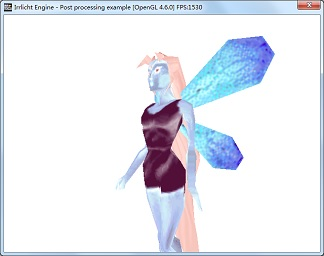

This tutorial shows how to implement post processing for D3D9 and OpenGL with the engine. In order to do post processing, scene objects are firstly rendered to render target. With the help of screen quad, the render target texture is then drawn on the quad with shader-defined effects applied.
This tutorial shows how to create a screen quad. It also shows how to create a render target texture and associate it with the quad. Effects are defined as shaders which are applied during rendering the quad with the render target texture attached to it.
A simple color inverse example is presented in this tutorial. The effect is written in HLSL and GLSL.
- Author
- Boshen Guan
We include all headers and define necessary variables as we have done before.
#include "driverChoice.h"
#include "exampleHelper.h"
#include <irrlicht.h>
using namespace irr;
#ifdef _MSC_VER
#pragma comment(lib, "Irrlicht.lib")
#endif
We write a class derived from IShaderConstantSetCallBack class and implement OnSetConstants callback interface. In this callback, we will set constants used by the shader. In this example, our HLSL shader needs texture size as input in its vertex shader. Therefore, we set texture size in OnSetConstants callback using setVertexShaderConstant function.
IrrlichtDevice* device = 0;
video::ITexture* rt = 0;
class QuadShaderCallBack : public video::IShaderConstantSetCallBack
{
public:
QuadShaderCallBack() : FirstUpdate(true), TextureSizeID(-1), TextureSamplerID(-1)
{ }
virtual void OnSetConstants(video::IMaterialRendererServices* services,
s32 userData)
{
core::dimension2d<u32> size = rt->getSize();
f32 textureSize[] =
{
(f32)size.Width, (f32)size.Height
};
if ( FirstUpdate )
{
TextureSizeID = services->getVertexShaderConstantID("TextureSize");
TextureSamplerID = services->getPixelShaderConstantID("TextureSampler");
}
services->setVertexShaderConstant(TextureSizeID, reinterpret_cast<f32*>(textureSize), 2);
s32 textureLayer = 0;
services->setPixelShaderConstant(TextureSamplerID, &textureLayer, 1);
}
private:
bool FirstUpdate;
s32 TextureSizeID;
s32 TextureSamplerID;
};
class ScreenQuad : public IReferenceCounted
{
public:
ScreenQuad(video::IVideoDriver* driver)
: Driver(driver)
{
A screen quad is composed of two adjacent triangles with 4 vertices. Vertex [0], [1] and [2] create the first triangle and Vertex [0], [2] and [3] create the second one. To map texture on the quad, UV coordinates are assigned to the vertices. The origin of UV coordinate locates on the top-left corner. And the value of UVs range from 0 to 1.
Vertices[0] = irr::video::S3DVertex(-1.0f, -1.0f, 0.0f, 1, 1, 0, irr::video::SColor(0,255,255,255), 0.0f, 1.0f);
Vertices[1] = irr::video::S3DVertex(-1.0f, 1.0f, 0.0f, 1, 1, 0, irr::video::SColor(0,255,255,255), 0.0f, 0.0f);
Vertices[2] = irr::video::S3DVertex( 1.0f, 1.0f, 0.0f, 1, 1, 0, irr::video::SColor(0,255,255,255), 1.0f, 0.0f);
Vertices[3] = irr::video::S3DVertex( 1.0f, -1.0f, 0.0f, 1, 1, 0, irr::video::SColor(0,255,255,255), 1.0f, 1.0f);
Indices[0] = 0;
Indices[1] = 1;
Indices[2] = 2;
Indices[3] = 0;
Indices[4] = 2;
Indices[5] = 3;
Material.setFlag(video::EMF_LIGHTING, false);
for (u32 i = 0; i < video::MATERIAL_MAX_TEXTURES; i++)
{
Material.TextureLayer[i].TextureWrapU = video::ETC_CLAMP_TO_EDGE;
Material.TextureLayer[i].TextureWrapV = video::ETC_CLAMP_TO_EDGE;
}
}
virtual ~ScreenQuad() {}
virtual void render()
{
Driver->setMaterial(Material);
Driver->setTransform(video::ETS_WORLD, core::IdentityMatrix);
Driver->setTransform(video::ETS_VIEW, core::IdentityMatrix);
Driver->setTransform(video::ETS_PROJECTION, core::IdentityMatrix);
Driver->drawVertexPrimitiveList(Vertices, 4, Indices, 2);
}
virtual void setMaterialFlag(video::E_MATERIAL_FLAG flag, bool newvalue)
{
Material.setFlag(flag, newvalue);
}
void setMaterialTexture(u32 textureLayer, video::ITexture* texture)
{
Material.setTexture(textureLayer, texture);
}
virtual void setMaterialType(video::E_MATERIAL_TYPE newType)
{
Material.MaterialType = newType;
}
private:
video::IVideoDriver *Driver;
video::S3DVertex Vertices[4];
u16 Indices[6];
video::SMaterial Material;
};
We start up the engine just like before. Then shader programs are selected according to the driver type.
int main()
{
video::E_DRIVER_TYPE driverType=driverChoiceConsole();
if (driverType==video::EDT_COUNT)
return 1;
device = createDevice(driverType, core::dimension2d<u32>(640, 480));
if (device == 0)
return 1;
video::IVideoDriver* driver = device->getVideoDriver();
scene::ISceneManager* smgr = device->getSceneManager();
In this example, high level post processing shaders are loaded for both Direct3D and OpenGL drivers. File pp_d3d9.hlsl is for Direct3D 9, and pp_opengl.frag/pp_opengl.vert are for OpenGL.
const io::path mediaPath = getExampleMediaPath();
io::path vsFileName;
io::path psFileName;
switch(driverType)
{
case video::EDT_DIRECT3D9:
psFileName = mediaPath + "pp_d3d9.hlsl";
vsFileName = psFileName;
break;
case video::EDT_OPENGL:
psFileName = mediaPath + "pp_opengl.frag";
vsFileName = mediaPath + "pp_opengl.vert";
break;
}
Check for hardware capability of executing the corresponding shaders on selected renderer. This is not necessary though.
if (!driver->queryFeature(video::EVDF_PIXEL_SHADER_1_1) &&
!driver->queryFeature(video::EVDF_ARB_FRAGMENT_PROGRAM_1))
{
device->getLogger()->log("WARNING: Pixel shaders disabled "\
"because of missing driver/hardware support.");
psFileName = "";
}
if (!driver->queryFeature(video::EVDF_VERTEX_SHADER_1_1) &&
!driver->queryFeature(video::EVDF_ARB_VERTEX_PROGRAM_1))
{
device->getLogger()->log("WARNING: Vertex shaders disabled "\
"because of missing driver/hardware support.");
vsFileName = "";
}
An animated mesh is loaded to be displayed. As in most examples, we'll take the fairy md2 model.
scene::IAnimatedMeshSceneNode* fairy = smgr->addAnimatedMeshSceneNode(
smgr->getMesh(mediaPath + "faerie.md2"));
if (fairy)
{
fairy->setMaterialTexture(0,
driver->getTexture(mediaPath + "faerie2.bmp"));
fairy->setMaterialFlag(video::EMF_LIGHTING, false);
fairy->setPosition(core::vector3df(-10,0,-100));
fairy->setMD2Animation ( scene::EMAT_STAND );
}
smgr->addCameraSceneNode(0, core::vector3df(10,10,-80),
core::vector3df(-10,10,-100));
We create a render target texture (RTT) with the same size as frame buffer. Instead of rendering the scene directly to the frame buffer, we firstly render it to this RTT. Post processing is then applied based on this RTT. RTT size needs not to be the same with frame buffer though. However in this example, we expect the result of rendering to RTT to be consistent with the result of rendering directly to the frame buffer. Therefore, the size of RTT keeps the same with frame buffer.
if (driver->queryFeature(video::EVDF_RENDER_TO_TARGET))
{
rt = driver->addRenderTargetTexture(core::dimension2d<u32>(640, 480), "RTT1");
}
else
{
device->getLogger()->log("Your hardware or this renderer is not able to use the "\
"render to texture feature. RTT Disabled.");
}
Post processing is achieved by rendering a screen quad with this RTT (with previously rendered result) as a texture on the quad. A screen quad is geometry of flat plane composed of two adjacent triangles covering the entire area of viewport. In this pass of rendering, RTT works just like a normal texture and is drawn on the quad during rendering. We can then take control of this rendering process by applying various shader-defined materials to the quad. In other words, we can achieve different effect by writing different shaders. This process is called post processing because it normally does not rely on scene geometry. The inputs of this process are just textures, or in other words, just images. With the help of screen quad, we can draw these images on the screen with different effects. For example, we can adjust contrast, make grayscale, add noise, do more fancy effect such as blur, bloom, ghost, or just like in this example, we invert the color to produce negative image. Note that post processing is not limited to use only one texture. It can take multiple textures as shader inputs to provide desired result. In addition, post processing can also be chained to produce compound result.
ScreenQuad *screenQuad = new ScreenQuad(driver);
screenQuad->setMaterialFlag(video::EMF_USE_MIP_MAPS, false);
screenQuad->setMaterialFlag(video::EMF_BILINEAR_FILTER, false);
screenQuad->setMaterialTexture(0, rt);
Let's create material for the quad. Like in other example, we create material using IGPUProgrammingServices and call addShaderMaterialFromFiles, which returns a material type identifier.
video::IGPUProgrammingServices* gpu = driver->getGPUProgrammingServices();
s32 ppMaterialType = 0;
if (gpu)
{
QuadShaderCallBack* mc = new QuadShaderCallBack();
ppMaterialType = gpu->addHighLevelShaderMaterialFromFiles(
vsFileName, "vertexMain", video::EVST_VS_1_1,
psFileName, "pixelMain", video::EPST_PS_1_1, mc);
mc->drop();
}
screenQuad->setMaterialType((video::E_MATERIAL_TYPE)ppMaterialType);
Now draw everything. That's all.
int lastFPS = -1;
while(device->run())
{
if (device->isWindowActive())
{
driver->beginScene(true, true, video::SColor(255,0,0,0));
if (rt)
{
driver->setRenderTarget(rt, true, true, video::SColor(255,0,0,0));
smgr->drawAll();
driver->setRenderTarget(0, true, true, video::SColor(255,0,0,0));
screenQuad->render();
}
else
{
smgr->drawAll();
}
driver->endScene();
int fps = driver->getFPS();
if (lastFPS != fps)
{
core::stringw str = L"Irrlicht Engine - Post processing example [";
str += driver->getName();
str += "] FPS:";
str += fps;
device->setWindowCaption(str.c_str());
lastFPS = fps;
}
}
}
screenQuad->drop();
device->drop();
return 0;
}